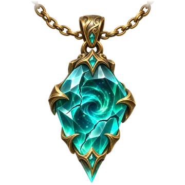

강화 성공
최대 +30강. 골드로 강화합니다.

최대 +30강. 골드로 강화합니다.

응축된 마력핵 5개로 제작. 파괴 결과가 발생할 때만 소모됩니다.
| 목표 강화 | 성공 | 유지 | 하락 | 파괴 | 보호석 필요량 |
|---|---|---|---|---|---|
| +0 → +1 | 100% | 0% | 0% | 0% | 0 |
| +1 → +2 | 100% | 0% | 0% | 0% | 0 |
| +2 → +3 | 100% | 0% | 0% | 0% | 0 |
| +3 → +4 | 100% | 0% | 0% | 0% | 0 |
| +4 → +5 | 100% | 0% | 0% | 0% | 0 |
| +5 → +6 | 40% | 60% | 0% | 0% | 0 |
| +6 → +7 | 40% | 60% | 0% | 0% | 0 |
| +7 → +8 | 35% | 60% | 5% | 0% | 0 |
| +8 → +9 | 35% | 60% | 5% | 0% | 0 |
| +9 → +10 | 25% | 65% | 10% | 0% | 0 |
| +10 → +11 | 20% | 70% | 10% | 0% | 0 |
| +11 → +12 | 20% | 70% | 10% | 0% | 0 |
| +12 → +13 | 20% | 70% | 10% | 0% | 0 |
| +13 → +14 | 20% | 70% | 10% | 0% | 0 |
| +14 → +15 | 18% | 71% | 10% | 1% | 1 |
| +15 → +16 | 15% | 73% | 10% | 2% | 1 |
| +16 → +17 | 15% | 73% | 10% | 2% | 1 |
| +17 → +18 | 15% | 73% | 10% | 2% | 2 |
| +18 → +19 | 15% | 73% | 10% | 2% | 2 |
| +19 → +20 | 12% | 75% | 10% | 3% | 2 |
| +20 → +21 | 12% | 75% | 10% | 3% | 3 |
| +21 → +22 | 12% | 75% | 10% | 3% | 3 |
| +22 → +23 | 12% | 75% | 10% | 3% | 3 |
| +23 → +24 | 12% | 75% | 10% | 3% | 4 |
| +24 → +25 | 10% | 76% | 10% | 4% | 4 |
| +25 → +26 | 10% | 76% | 10% | 4% | 4 |
| +26 → +27 | 10% | 76% | 10% | 4% | 5 |
| +27 → +28 | 10% | 76% | 10% | 4% | 5 |
| +28 → +29 | 10% | 76% | 10% | 4% | 5 |
| +29 → +30 | 7% | 78% | 10% | 5% | 6 |
기본 확률표입니다. 실패 누적 1회당 성공률 +0.5%p, 최대 +2.5%p. 유지 확률에서 우선 차감하고 필요하면 하락에서 차감합니다. +10에 도달한 뒤에는 +10 아래로 하락하지 않습니다. 보호석 사용 시 파괴 결과는 유지로 바뀝니다.
| 구분 | 일반 몬스터 | 정예 몬스터 |
|---|---|---|
| 일반 장비 | 6%~7.8% (방 1~10 계산식) | 60%~78% |
| 반지·목걸이 | 0.8% | 8% |
| 필드 유니크 | 0.1% | 1% |
일반 장비는 방 번호에 따라 6% + (방 번호−1)×0.2%p. 실제 접근 가능한 방에 해당하는 값을 사용합니다. 항목별 별도 추첨이며 특수 지역과 보스는 일반 표와 다릅니다.
| 지역 단계 | 일반 | 고급 | 희귀 | 영웅 | 전설 |
|---|---|---|---|---|---|
| 1 | 60.00% | 29.00% | 9.50% | 1.40% | 0.10% |
| 2 | 59.20% | 29.40% | 9.80% | 1.48% | 0.12% |
| 3 | 58.40% | 29.80% | 10.10% | 1.56% | 0.14% |
| 4 | 57.60% | 30.20% | 10.40% | 1.64% | 0.16% |
| 5 | 56.80% | 30.60% | 10.70% | 1.72% | 0.18% |
| 6 | 56.00% | 31.00% | 11.00% | 1.80% | 0.20% |
| 7 | 55.20% | 31.40% | 11.30% | 1.88% | 0.22% |
| 8 | 54.40% | 31.80% | 11.60% | 1.96% | 0.24% |
| 9 | 53.60% | 32.20% | 11.90% | 2.04% | 0.26% |
| 10 | 52.80% | 32.60% | 12.20% | 2.12% | 0.28% |
위 등급 확률은 일반 장비 드랍 성공 후 조건부 추첨입니다. 지역별 장비 등급 가중치 합계는 100%입니다.
| 장신구 등급 | 조건부 확률 |
|---|---|
| 일반 | 70% |
| 고급 | 25% |
| 희귀 | 4.5% |
| 영웅 | 0.45% |
| 전설 | 0.05% |
| 필드 보스 유니크 | 확률 |
|---|---|
| 유니크 획득 | 20% |
| 고급 / 희귀 / 영웅 / 전설 (획득 시) | 60% / 28% / 10% / 2% |

클리어 후 4장 생성. 다음 표는 카드 1장 기준입니다.

유니크 카드 보상 중 10% 분기. 카드 1장 기준 1.5%.
| 보상 | 카드 1장 확률 |
|---|---|
| 세트 장비 | 5% |
| 유니크 전체 | 15% |
| └ 차원의 균열 (포함) | 1.5% |
| └ 기타 유니크 (포함) | 13.5% |
| 일반 계열 장비 | 10% |
| 포션 | 35% |
| 골드 | 35% |
로컬 dungeon_run.gd의 roll_card 및 dungeon_catalog.gd 기준. 차원의 균열의 오래된 게임 설명(0.3%)과 실제 추첨 코드(15%×10%=1.5%)가 다릅니다. 파티 서버의 별도 보상 로직은 확인되지 않아 이 표를 그대로 적용한다고 단정하지 않습니다.
| 구분 | 조건 / 확률 |
|---|---|
| 일반 사냥터 정예 | 일반 스폰 시 2% · 활성 정예가 있으면 추가 정예 제한 |
| 필드 보스 | 처치 후 30분 |
| 황금 던전 | 조건을 만족하는 정예 처치 시 50% |
| 별빛 수련장 | 조건을 만족하는 정예 처치 시 50% |
| 특수 포탈 유지 | 60초 |
| 특수 던전 제한 | 5분 |
main.gd의 일반 사냥터 스폰 및 포탈 분기 기준. 보스·전직·던전·특수 사냥터 등은 별도 조건이며 이미 열린 특수 포탈이 있으면 추가 생성되지 않습니다.